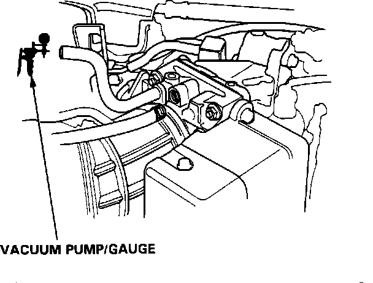
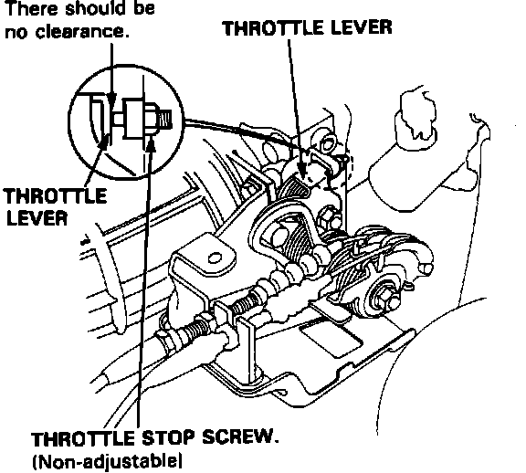

Throttle Body: Testing and Inspection
NOTE: Do not adjust the throttle stop screw. This adjustment is made at the factory.Throttle Body Inspection:

1. Start the engine and warm up to normal operating temperature.
2. Disconnect the evaporative canister purge hose from the top of the throttle body.
3. Connect a vacuum gauge to the purge port.
4. Allow the engine to idle and check that no vacuum is present.
5. Open throttle slightly and check that vacuum is now indicated on the gauge. If no vacuum is indicated, check the purge port for clogging. If necessary, clean it with carburetor cleaner.
6. Stop the engine and check throttle cable operation. It should operate smoothly without sticking or binding.
Throttle Body Inspection:

7. Check the throttle body assembly for:
a. Excessive wear or play in the throttle shaft.
b. Sticky or binding throttle lever at full close position.
c. Clearance between throttle stop screw and throttle lever at full close position. (There should be NO clearance.)
Replace the throttle body if there is excessive play in the throttle shaft or if the shaft is binding or sticking.